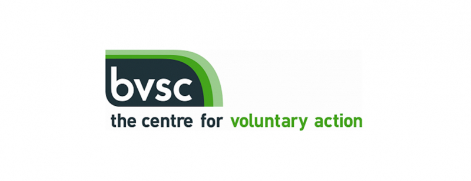
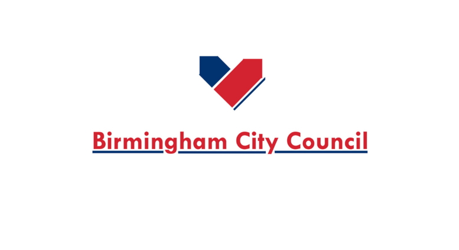
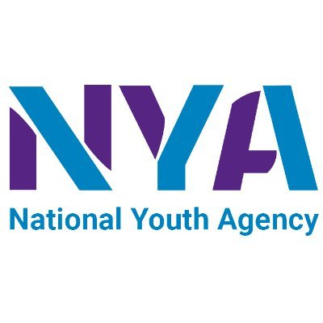
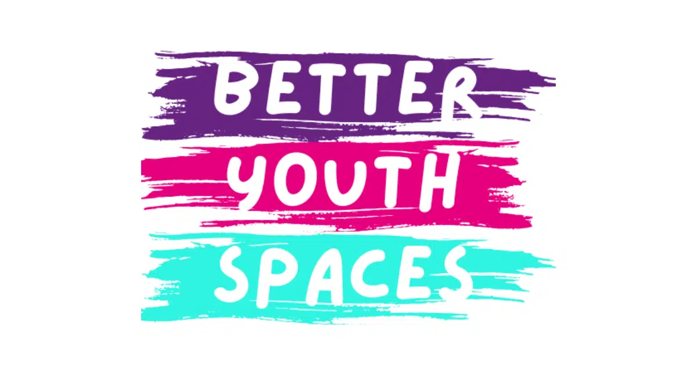
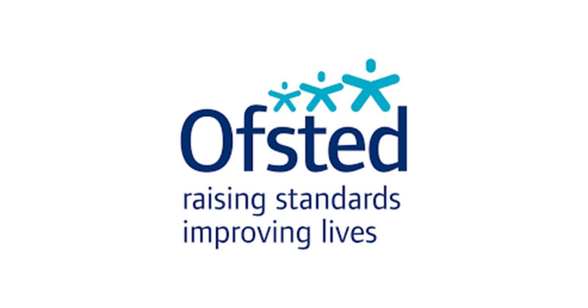
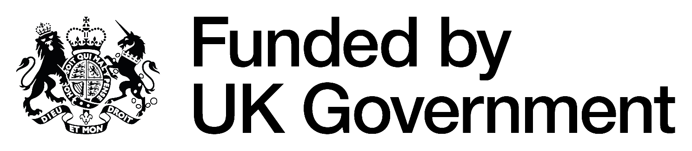

Community Reform CIC
Building stronger communities through empowerment and engagement
Enabling and empowering local people through active programmes, youth development, education, and vital community support services.

Community Reform CIC
Enabling and empowering local people through active programmes, youth development, education, and vital community support services.
Comprehensive services designed to support, educate, and empower our community
Programmes that enable and empower local people to get active
Our Fitness With Champions programme delivers inclusive open-access sports and wellbeing sessions for young people aged 8–18, creating positive spaces where participants can stay active, build confidence, improve wellbeing, and develop healthy routines.
We deliver structured boxing and wellbeing sessions in partnership with local Ark schools across Birmingham, providing young people with safe, engaging, and positive opportunities to improve both physical and mental wellbeing. Our sessions are designed to build confidence, discipline, resilience, teamwork, and healthy routines through sport and positive mentorship. We also deliver inclusive provision for SEND (Special Educational Needs and Disabilities) students, ensuring activities are accessible, supportive, and tailored to varying needs and abilities within a safe and supervised environment.
A welcoming space for everyone in our community
Our community centre provides a safe, inclusive, and welcoming environment designed to support individuals, families, and young people through a wide range of community-led activities, wellbeing programmes, educational support services, and social engagement opportunities. The centre acts as a hub for positive community development, bringing people together through accessible services that promote inclusion, health and wellbeing, personal growth, and stronger community connections.
Through partnerships, outreach initiatives, youth activities, mentoring programmes, training opportunities, and wellbeing-focused sessions, we aim to create meaningful opportunities for individuals of all backgrounds to engage, develop confidence, access support, and build positive relationships within their local community. Our provision is focused on early intervention, community cohesion, reducing isolation, and creating safe spaces where people feel supported, valued, and empowered.
Safe, engaging spaces for young people to thrive
Our youth clubs provide safe, inclusive, and engaging spaces where young people can socialise, stay active, develop confidence, and build positive relationships within their community. Through structured open-access sessions, we deliver a wide range of activities focused on youth engagement, health and wellbeing, personal development, and early intervention support. Our programmes are designed to create positive opportunities for young people through sport, mentoring, group activities, creative sessions, and community-based learning, helping to reduce social isolation, encourage healthier lifestyles, improve confidence, and support emotional wellbeing.
Building skills and knowledge for a brighter future
Our Training & Education programmes are designed to support children and young people through structured learning, mentoring, and personal development within a safe and professionally managed environment. As an Ofsted-registered provider, we deliver a range of educational and enrichment activities that promote confidence, consistency, wellbeing, and positive development.
Expert support when you need it most
Our Information, Advice & Guidance services are designed to support individuals, young people, and families by providing accessible guidance, signposting, and community-based support in a safe and welcoming environment. We work closely with local residents and partner organisations to help individuals access opportunities, improve wellbeing, overcome barriers, and make informed decisions regarding education, employment, training, health, and personal development.
Through early intervention, mentoring, and tailored support, we aim to empower communities, reduce isolation, promote inclusion, and improve long-term outcomes for those who may require additional guidance or support. Our approach focuses on building confidence, encouraging positive engagement, and connecting individuals with the services and opportunities available to them.
Community Reform CIC has worked alongside local organisations, councils, and community partners to deliver projects that support young people, strengthen families, and improve wellbeing across the community.
Our work focuses on creating safe spaces, supporting those facing hardship, and giving young people positive opportunities through sport, mentoring, education, and community engagement.

In Partnership With BVSC
Through the Household Support Fund programme, Community Reform CIC helped distribute over £213,800 in support to households facing financial hardship over several months.
The support helped local families with essentials including food, utility bills, clothing, and other day-to-day necessities during a particularly difficult period for many households.

Supported By Birmingham City Council
Through the Warm Welcome Space initiative, we provided a safe and welcoming environment for members of the local community during periods of increased financial pressure and social isolation.
The project gave people access to a warm space, community support, and opportunities to connect with others within a positive environment.

Supported Through National Youth Agency Programmes
Over a two-year period, Community Reform CIC worked with more than 320 young people in person and supported a further 450+ online through a combination of sports, mentoring, and youth engagement activities.
The programme included football, basketball, boxing, fitness, and structured youth sessions, giving young people a safe environment to stay active, build confidence, and spend time around positive influences.
Alongside the sports activities, we also delivered financial awareness and career-focused mentoring, helping young people better understand future opportunities, money management, decision-making, and different career pathways available to them.
The project was centred around keeping young people engaged, supported, and connected to positive opportunities within the community.
In Partnership With National Grid
Community Reform CIC has also worked alongside National Grid on community-focused initiatives designed to support local residents, strengthen engagement, and improve well-being within the community.

Community Reform CIC successfully secured funding through the Better Youth Spaces initiative to support the development of improved youth and fitness facilities.
The funding has helped us continue building safer and more positive spaces where young people can stay active, improve wellbeing, and access opportunities that support both physical and mental health.

Community Reform CIC continues to develop structured provision for young people aged 8–18, combining education, mentoring, wellbeing activities, fitness, and mixed martial arts in a safe, professionally supervised environment.
We aim to create positive spaces where young people can build confidence, discipline, resilience, and healthier routines while being supported both personally and socially.
Registration Number: 2868906

Supported by UK Government funding to deliver community services and support to those who need it most.
Interested in our programmes or need support? We're here to help.
294 Edward Road
Birmingham, B5 7PH
Connect on social media
info@crcic.co.uk
07359 725 058